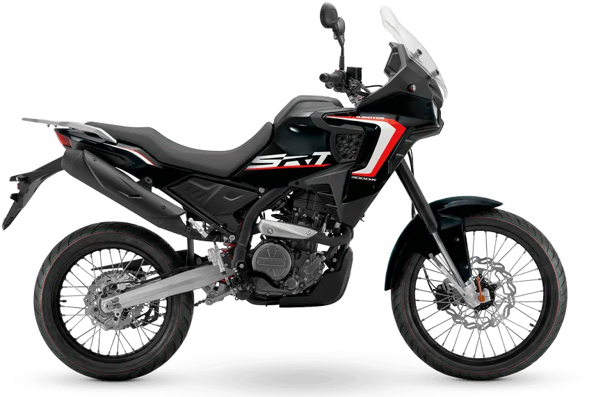
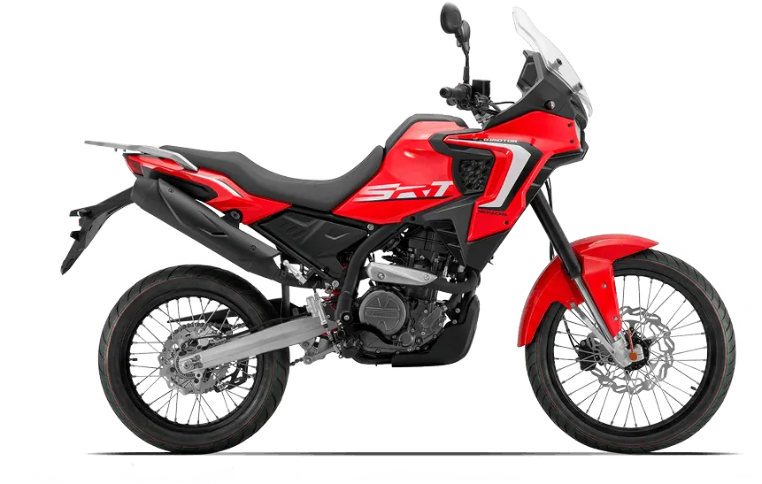
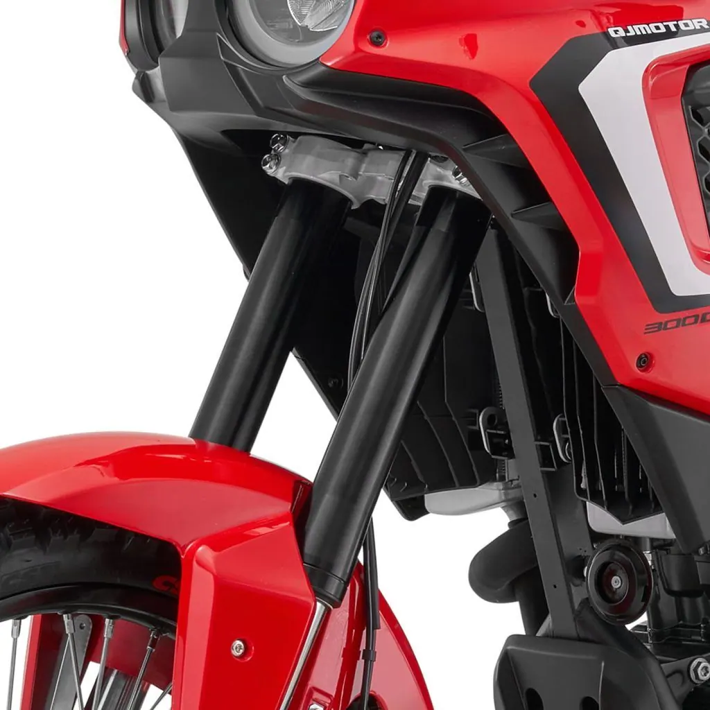
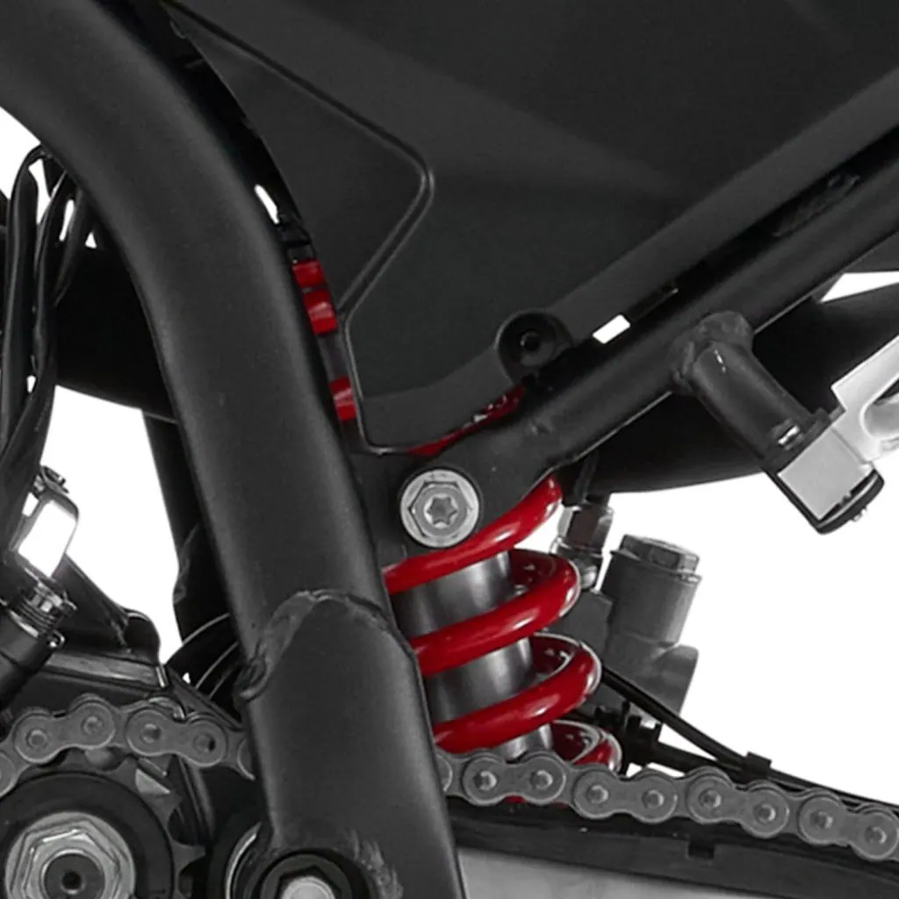

QJ Motor
SRT 450RX
A2 450 cc · 35 kW · Adventure
Propuesta de OpsPilot para Expomoto Córdoba, en revisión. No es la web oficial: expomotocordoba.es
Inicio › Motos › QJ Motor › SRT 300DX

QJ Motor
Motor – potente, ligero y eficiente
Precio y financiación: te los damos al momento por teléfono (pendientes de publicar en la web).




Motor monocilíndrico de 292 cc , con distribución DOHC y 4 válvulas para una entrega de potencia más llena y lineal.
Ofrece 28,6 CV (21 kW) y 24 Nm de par a 7.250 rpm, con gestión electrónica Bosch EFI MSE 8.0 y refrigeración líquida para un rendimiento estable incluso en rutas exigentes.
Suavidad, fiabilidad y consumo contenido: el equilibrio perfecto para el día a día y para tus escapadas trail.
Horquilla delantera invertida de largo recorrido (185 mm) que garantiza una excelente absorción de baches, mayor rigidez y precisión en la conducción.
Su diseño robusto aporta estabilidad tanto en pistas como en asfalto, permitiendo un pilotaje más seguro y deportivo.
Equipado con un monoamortiguador trasero diseñado para ofrecer control y confort en todo tipo de superficies.
Permite una conducción más equilibrada, absorbiendo irregularidades del terreno y manteniendo la moto estable tanto en pistas rápidas como en rutas urbanas.
Disco delantero de Ø300 mm con sistema ABS , diseñado para ofrecer una frenada potente, estable y progresiva en cualquier situación.
Su diámetro amplio mejora la disipación térmica y reduce la fatiga en uso prolongado, proporcionando seguridad tanto en asfalto como en terrenos más irregulares.